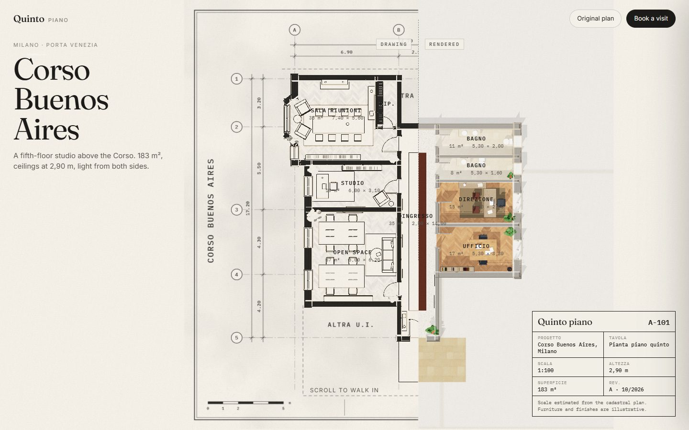
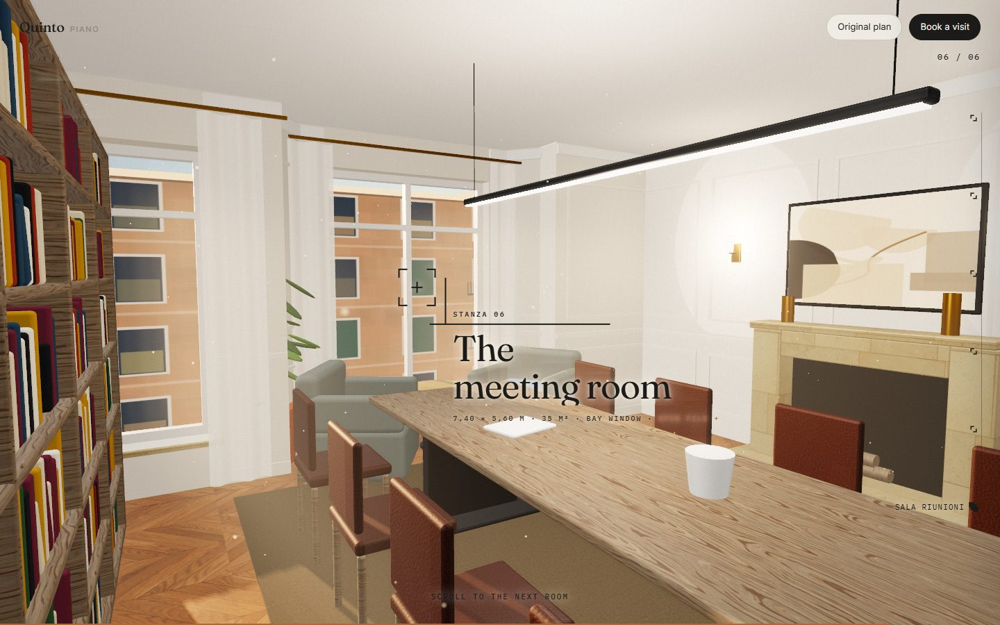
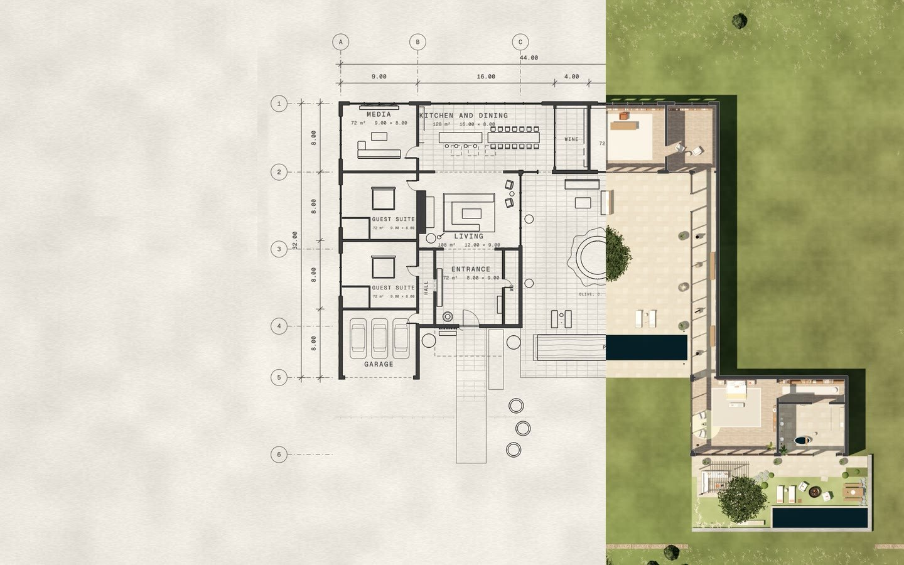

NewCorso Buenos Aires
Milano · Quinto piano · 183 m²
A real cadastral floor plan becomes a Milanese studio as you scroll: the walls rise out of the drawing, the camera walks in at eye height, and each room turns from pencil to oak, terrazzo and marble in the late sun.
- Floor plan → 3D
- three.js
- Scroll story
- Room files

Casa Azaj
Concept house · 946 m² · EN / IT
A courtyard house drawn live in the browser. A flat plan becomes the house as you scroll, with an olive tree, a pool, a glass gallery and seven room files to open along the way.
- Floor plan → 3D
- three.js
- Bilingual
- Golden-hour light